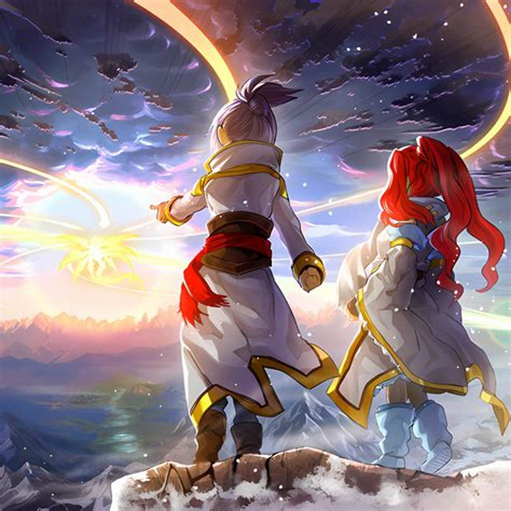

Ice Barrier
Descubre el lore del arquetipo Ice Barrier en Yu-Gi-Oh!
Descubre el lore del arquetipo Ice Barrier en Yu-Gi-Oh!
El arquetipo "Ice Barrier" en Yu-Gi-Oh! representa a guerreros y criaturas que utilizan el poder del hielo y el frío para sus ataques y defensas. Su historia está centrada en una civilización antigua que habitaba un mundo helado, utilizando magia del hielo para protegerse y mantener el equilibrio.
Estos héroes del Ice Barrier son conocidos por su habilidad para manipular el frío y crear barreras impenetrables, defendiendo a sus aliados y protegiendo su reino congelado de amenazas externas.
Para más información, contáctanos en nuestras redes sociales.